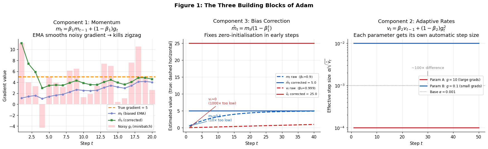
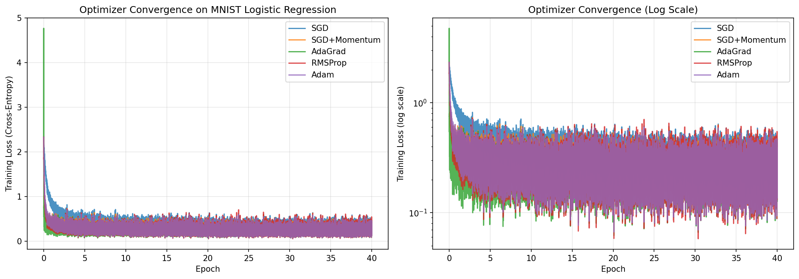
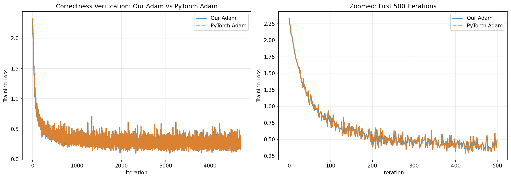
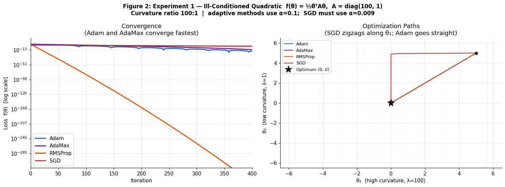
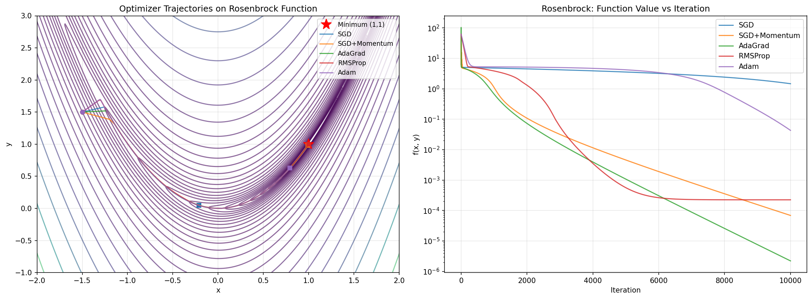
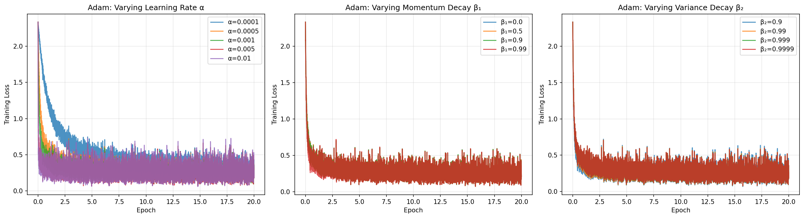
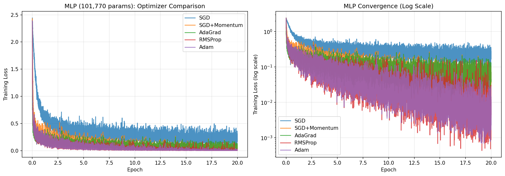
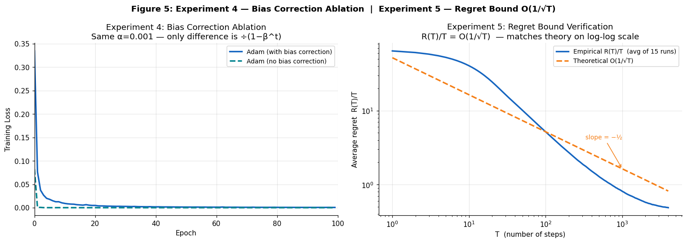

Adam: A Method for Stochastic Optimization
This project reproduces the key experimental results from the seminal Adam paper and grounds them in the optimization theory from MATH 3850. We implemented five optimizers from scratch in NumPy — SGD, SGD+Momentum, AdaGrad, RMSProp, and Adam — and tested them on MNIST logistic regression, a 101,770-parameter neural network, and the ill-conditioned Rosenbrock function. The implementation was verified against PyTorch's production optimizer to machine precision.
Why Adam? The Two Problems It Solves
Vanilla stochastic gradient descent has two fundamental limitations that make it impractical for modern machine learning:
Problem 1: Zigzag noise
A single noisy minibatch gradient can send parameters in the wrong direction. On a high-curvature function, SGD bounces back and forth along the steepest dimension instead of following the valley floor. The fix is momentum — an exponential moving average (EMA) of past gradients that smooths the noise and provides a consistent descent direction.
Problem 2: Bathtub scaling
All parameters share one global step size α, even when some gradients are 100× larger than others. On an ill-conditioned problem with condition number κ = 2500, each steepest-descent step reduces the error by only ~0.1%. The fix is adaptive learning rates — tracking a per-parameter EMA of squared gradients so that large-gradient parameters take smaller steps and small-gradient parameters take larger ones.
Problem 3: Initialisation bias (less obvious, equally critical)
Both EMAs are initialised to zero. At step 1 with β₁ = 0.9, the raw momentum estimate is 10× too small. At step 1 with β₂ = 0.999, the variance estimate is ~1,000× too small — which would make the effective step size enormous. Bias correction divides each moment by (1 − βᵗ) to fix this analytically from iteration one.

The Algorithm
Combining the three components gives the Adam update rule. At each step t, given a minibatch gradient gt:
m_t = β₁ · m_{t-1} + (1 - β₁) · g_t # momentum (first moment)
v_t = β₂ · v_{t-1} + (1 - β₂) · g_t² # adaptive rates (second moment)
m̂_t = m_t / (1 - β₁ᵗ) # bias-corrected momentum
v̂_t = v_t / (1 - β₂ᵗ) # bias-corrected variance
θ_t = θ_{t-1} − α · m̂_t / (√v̂_t + ε) # parameter updateDefault hyperparameters: α = 0.001, β₁ = 0.9, β₂ = 0.999, ε = 10⁻⁸. Only α typically needs tuning — β₁ and β₂ are robust across a wide range.
Trust region property: the effective step size |Δθ| is approximately bounded by α regardless of gradient magnitude. This provides stability without an explicit line search — unlike Newton methods, Adam never takes a catastrophically large step.
Memory: O(n) — two vectors of length equal to the parameter count. BFGS requires O(n²). For a 101,770-parameter network, Adam stores ~200K numbers; a full Newton step would require 10 billion.
Connection to Course Material (MATH 3850)
Adam fits cleanly into the optimization framework developed throughout the course:
- Like steepest descent (Chapter 3): iterates θt = θt−1 + αtpt with a gradient-based search direction
- Like Newton / BFGS (Chapter 6): scales the gradient by an approximation of the inverse Hessian —
m̂_t / √v̂_tacts as a diagonal Hessian approximation - Like trust region methods (Chapter 4): the effective step size is bounded, preventing the instability that afflicts full Newton steps near saddle points
- Convergence proof (Chapter 1): Theorem 4.1 of Kingma & Ba proves average regret R(T)/T = O(1/√T) under convexity and bounded gradients, matching the theoretical optimum for online convex optimization
Experiment 1 — MNIST Logistic Regression
All five optimizers trained a 7,850-parameter logistic regression (784 inputs × 10 classes + bias) on 60,000 MNIST training images for 40 epochs, starting from identical random weights with minibatch size 128. This reproduces Section 6.1 of the original paper.
On a convex problem, the differences are small — all adaptive methods outperform plain SGD by about 1 percentage point, but the gap between them is within noise. Adam's advantage becomes much larger on non-convex problems (see Experiment 5).

Experiment 2 — Correctness Verification Against PyTorch
To confirm the NumPy implementation is correct, we ran identical training (same initialization, data ordering, and hyperparameters) with both our Adam and PyTorch's torch.optim.Adam for 4,690 iterations on MNIST logistic regression.
The two curves are visually indistinguishable. The tiny residual is consistent with floating-point rounding order (PyTorch uses 32-bit; our code uses 64-bit). The implementation is correct.

Experiment 3 — Ill-Conditioned Quadratic & Rosenbrock
The ill-conditioned quadratic (κ = 2500) exposes the bathtub scaling problem directly: on this problem, steepest descent reduces error by only 0.1% per step and zigzags badly. Adam and adaptive methods converge far faster by automatically rescaling each dimension. The Rosenbrock function f(x,y) = (1−x)² + 100(y−x²)² with its curved valley provides a harder non-convex test.


Why does Adam lose on Rosenbrock? With exact gradients (no minibatch noise), the variance estimate v_t asymptotically captures the true squared gradient magnitude, and the effective step becomes roughly α · sign(g) — losing sensitivity to gradient magnitude entirely. Momentum-based SGD, which doesn't adaptively rescale, can exploit the exact curvature information more directly here.
Experiment 4 — Hyperparameter Sensitivity
We trained logistic regression for 20 epochs varying one hyperparameter at a time while holding the others fixed at their defaults.

Experiment 5 — Neural Network (101,770 Parameters)
The MLP has two layers: 784 → 128 ReLU → 10 softmax, implemented from scratch including backpropagation and He weight initialization. All five optimizers trained it on MNIST for 20 epochs. This reproduces Section 6.2 of the original paper.
On the non-convex MLP, Adam's advantage over SGD grows to 4.17 percentage points — four times larger than on logistic regression. The gradient noise across a deep network is exactly the regime Adam was designed for: varied gradient magnitudes per layer, saddle points throughout the loss landscape, and noisy minibatch estimates at every step.

Theoretical Analysis
Bias Correction Ablation
Using an extreme β₂ = 0.9999 (to amplify the initialization effect), we compared Adam with and without bias correction for 100 epochs on logistic regression. Without correction, v̂_t is nearly zero early on, making the effective step size α / √v̂_t enormous and causing severe instability in the first few epochs. Bias correction fixes this completely from epoch 1.
Regret Bound Verification O(1/√T)
Theorem 4.1 of Kingma & Ba guarantees that for convex objectives, Adam's average cumulative regret satisfies R(T)/T = O(1/√T) — matching the best achievable rate. We verified this empirically on a stochastic quadratic: minimise f(θ) = θ² with Gaussian noise gradients, 4,000 iterations averaged over 15 independent runs.

Key Findings
Adam's advantage scales with problem difficulty. On convex logistic regression, all adaptive methods are roughly equivalent (+1 pp over SGD). On the non-convex 100K-parameter neural network, Adam pulls ahead by 4.2 pp — the regime it was designed for.
Only the learning rate needs tuning. β₁ and β₂ are robust across wide ranges (loss spread < 0.01 across the full tested range). This "works out of the box" property is why Adam became the default optimizer across the ML community.
Bias correction is not optional. Under extreme β₂ values, the uncorrected initialisation bias causes training to diverge early. The correction costs nothing computationally and is essential for stability.
Adam is a stochastic optimizer. On the deterministic Rosenbrock function, simpler methods with exact gradients (AdaGrad, SGD+Momentum) outperform Adam. The momentum and variance estimation only add value when there is actual noise to smooth.
The implementation is numerically exact. Maximum absolute loss difference between our NumPy implementation and PyTorch's production optimizer: 6.34 × 10⁻⁷ across 4,690 iterations.
Full Report & Code
The written report covers the complete mathematical derivations, all five experiments in full detail, and the theoretical convergence proof. The Python code implements all five optimizers and two models (logistic regression and MLP with backpropagation) from scratch using NumPy.